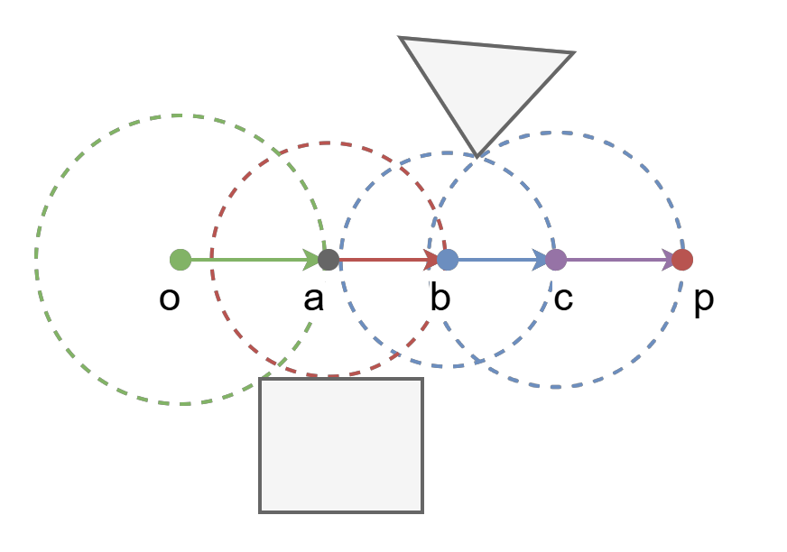
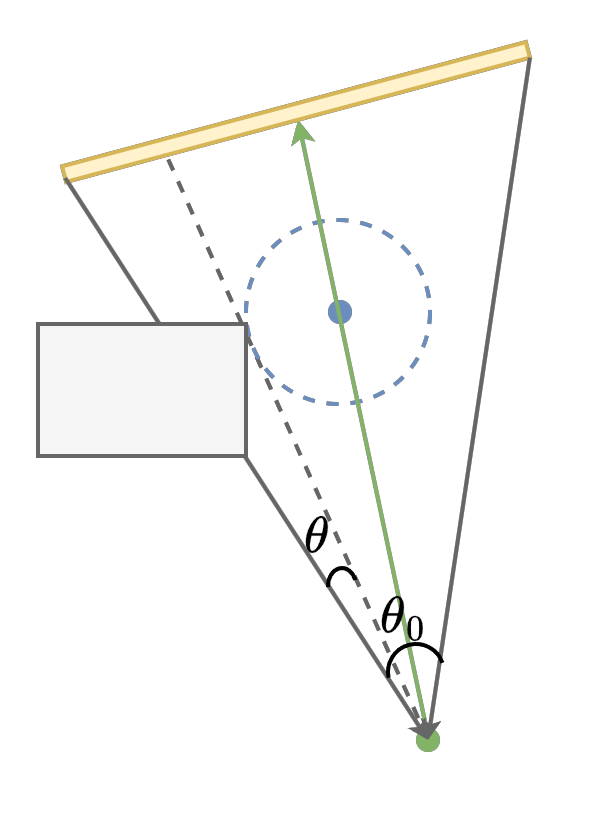
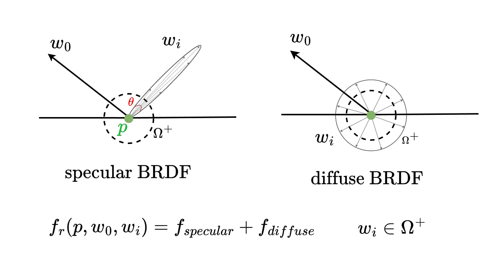
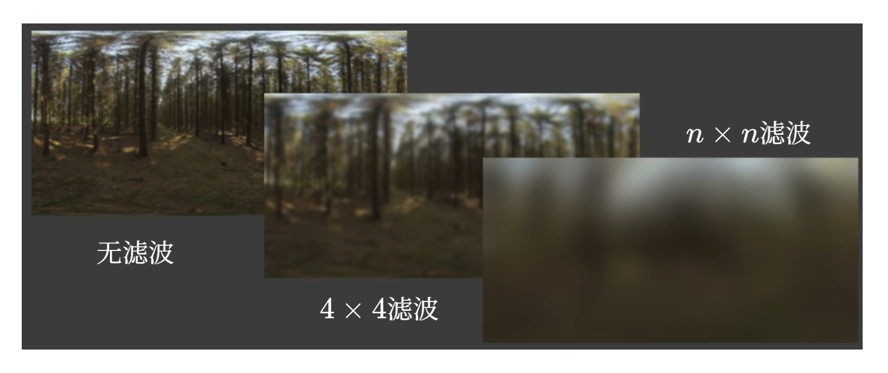
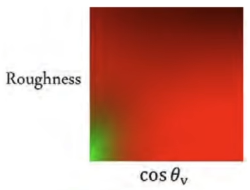
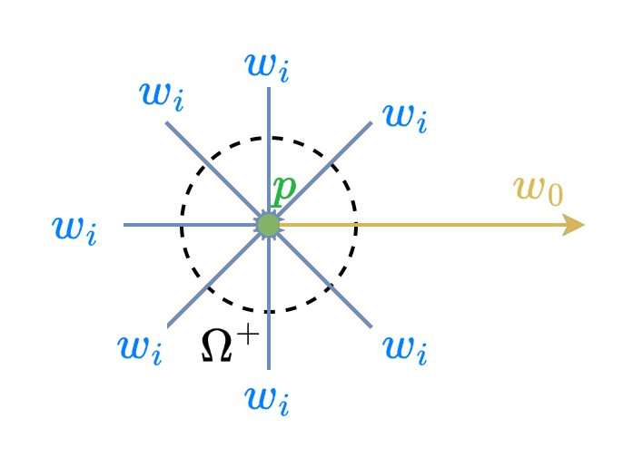

1. Real-tiem Envieronment Mapping¶
1.1 SDF与阴影¶

从点o到点p之间通过SDF进行步进；o,a,b,c点均保存当前位置周围 \(r_i\) 半径的空间没有物体，可以快速通行。

从原点步进到光源中心，计算路径中SDF最小值，计算遮挡角 \(\theta\) ， 根据 \(\frac{\theta}{\theta_0}\) 计算光线衰减，即阴影值。
实际计算时，一般不使用arcsin函数，而是使用以下公式：
- \(k\) 是一个常数，用于调整阴影值的范围。
- \(p\) 是最小SDF值点的坐标。
- \(o\) 是原点坐标。
1.2 环境贴图¶
这里主要优化以上函数的渲染效率，使用一些方法替代采样。
1.2.1 环境光积分优化¶

这里为了方便展示，将 \(w_i\) 的方向设置为向外，实际是指向 \(p\) 点的。图中 \(w_i\) 方向箭头长度代表计算该方向光线贡献时所乘的比例系数。
在现代PBR渲染中，BRDF为镜面反射和漫反射相加。镜面反射中，能够对 \(w_o\) 出射光线产生贡献的 \(w_i\) 集中在某一入射方向附近一小片区域，即 \(\theta\)。而在漫反射中，所有方向的 \(w_i\) 的贡献计算系数相同，即BRDF函数是Smooth。 - specular: \(\Omega_{f_r}\) 较小。 - diffuse: \(f_r\) smooth。
由此可以使用以下近似：
- \(L_i\) 光照分布函数，即环境贴图。
- \(f_r\) BRDF。
- \(\frac{\int_{\Omega_{f_r}}L_i(p,w_i)\, d_{w_i}}{\int_{\Omega_{f_r}}d_{w_i}}\) 对环境贴图进行滤波。根据BRDF与球面交集计算平均滤波卷积核大小，即 \(\Omega_{f_r}\)。如果BRDF是Smooth，则进行全图平均。
先对环境贴图进行平均滤波，然后根据实际BRDF与球面交集大小作为卷积核大小，进行采样并插值。

在工程应用中，只需要将镜面反射方向作为 \(w_i\) 对滤波后的环境贴图读取一次就可以获得 \(L_i(p, w_i)\) 的积分均值，而不需要多次采样，提高了渲染效率。
1.2.2 BRDF积分优化¶
PBR中的BRDF:
- \(F(w_i,h)\) ：菲涅尔项。
- \(G(w_o,w_i,h)\) ：阴影项。
- \(D(h)\) ：微表面法线分布(NDF), \(h\) 是半程向量。
- \(R_0\) ：菲涅尔项的初始值，根据材质的反射率和折射率计算。
- \(n_1\) ：入射光的折射率。
- \(n_2\) ：出射光的折射率。
- \(\theta\) ：入射角度。
- \(\theta_h\) ：半程向量与法线的角度。
- \(\alpha\) ：粗糙度。
到目前BRDF中有三个变量：\(R_0\)、\(\alpha\)、\(\theta_h\)或\(\theta\)。三维纹理储存和计算复杂。
\(R_0\) ： 基础反射率。现在只剩两个变量 \(\alpha\) 和 \(\theta_h\)，可以预计算进入纹理。

这就是 split sum 方法。
f 附录¶
f1 SDF纹理¶
f1.1 简单几何体SDF¶
f1.2 复杂几何体SDF¶
f2 渲染方程¶

- \(L_o(p,w_o)\) ：点 \(p\) 向 \(w_o\) 方向的输出颜色。
- \(L_e(p,w_o)\) ：点 \(p\) 向 \(w_o\) 方向的自发光颜色。
- \(f_r(p,w_o,w_i)\) ：\(p\) 的材质如何将 \(w_i\) 方向的光向 \(w_o\) 方向反射，BRDF。
- \(L_i(p,w_i)\) ：光照分布函数，即环境贴图。
- \(V(p,w_i)\) ：从 \(w_i\) 方向向 \(p\) 射入的光线可见性（光线衰减或遮挡）。
- \(\theta_i\) ：从 \(w_i\) 方向与 \(w_o\) 方向的夹角。
- \(d_{w_i}\) ：微小立体角。
直接光和间接光均包含在 \(L_i(p,w_i)\) 中。镜面反射和漫反射均包含在 \(f_r(p,w_o,w_i)\) 中。阴影和距离因子均包含在 \(V(p,w_i)\) 中。